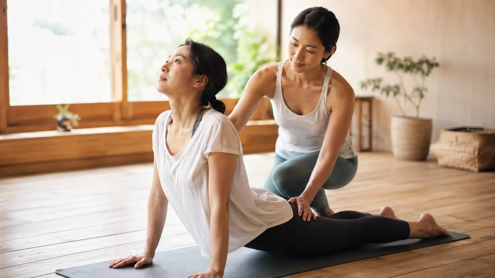

圓肩先鬆還是先練？從哪一步開始？

你照影片用力夾背，才做幾下，脖子就比肩胛更有感。手放下來，你可能只想知道：我是該再拉一下前胸，還是換一種練法？
圓肩練習可先從一個在意的動作開始，例如抬手時是否容易聳肩。胸廓和肩胛會隨手臂一起移動；支點、幅度與速度都會改變用力感。可以比較扶牆和徒手的差異，再選能自然呼吸的版本。單看肩膀外觀，無法決定每個人都該先鬆哪裡或先練哪裡。
圓肩想開始練，先鬆還是先練？
挑一個日常真會用到的動作，例如拿高處杯子。先試在舒適幅度抬手，再比較手有支點時的感受。還說不清肩線和手臂怎麼看，可以先做三個居家圓肩觀察，記下過程中哪裡先用力。
👆 手機版可左右滑動
| 練習時的感受 | 可以試的起點 | 觀察線索 |
|---|---|---|
| 抬手還沒到肩高就想聳肩 | 先縮小幅度，試著保留手部支點。 | 呼吸是否和原來一樣自在。 |
| 夾背時脖子比肩更緊 | 放掉刻意夾背，慢慢把手移回舒適位置。 | 比較頸肩的用力感。 |
| 在家不確定怎麼調 | 先看不同課型是否能提供動作回饋。 | 想要小班示範，還是較多個別指導。 |
一練就聳肩，怎麼換一個起點？
可試把動作縮小、放慢，或扶穩牆面再比較。若想理解開胸的意思與動作，可回到支柱頁。若你的困擾只在久坐時刻意挺直，另看坐著挺胸為什麼容易累。
常見問題
圓肩一定要先拉胸肌再練背嗎？
練習順序可從目前在意的動作、感受和可用支點決定。照片無法判定哪條肌肉該先拉。
每次抬手都用到脖子，還需要繼續嗎？
先降低幅度或停止讓你不舒服的版本。若有持續疼痛或其他症狀，先接受合適評估。
想上課時先看什麼？
可先比較老師提供的調整方式、班級形式和課堂節奏。
想再了解老師怎麼帶？
想讓老師示範怎麼縮小幅度，可以先看看各種課型有多少個別回饋。
比較課程與費用 →延伸閱讀 先整理自己的居家觀察